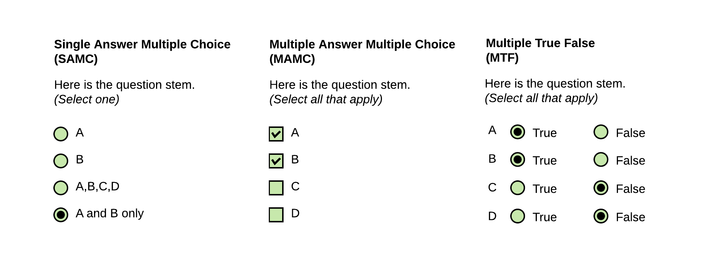

CODE
options(scipen=1, digits=3)
library(kableExtra) #printing tables
library(ggformula) #quick graphs
library(pbapply) #progress bar and time estimate for *apply fns
library(Hmisc) # %nin% operator
library(tidyverse) #ALL THE THINGSMultiple Response Scoring Approach
The purpose of this notebook is to describe the strategy for assigning a score ( a measure of accuracy) to response data for the SGC studies. This is required because the question type on the graph comprehension task used a ‘Multiple Response’ (MR) question design. Here, we evaluate different approaches to scoring multiple response questions, and transform raw item responses (e.g. boxes ABC are checked) to a measure of response accuracy. (Warning: this notebook takes several minutes to execute.)
options(scipen=1, digits=3)
library(kableExtra) #printing tables
library(ggformula) #quick graphs
library(pbapply) #progress bar and time estimate for *apply fns
library(Hmisc) # %nin% operator
library(tidyverse) #ALL THE THINGSThe graph comprehension task of the SGC studies presents readers with a graph, a question, and a series of checkboxes. Participants are instructed to use the graph to answer the question, and respond by selecting all the checkboxes that apply, where each checkbox corresponds to a datapoint in the graph.

In the psychology and education literatures on Tests & Measures, the format of this type of question is referred to as Multiple Response (MR), (also: Multiple Choice Multiple Answer (MCMA) and Multiple Answer Multiple Choice (MAMC)). It has a number of properties that make it different from traditional Single Answer Multiple Choice (SAMC) questions, where the respondent marks a single response from a number of options. In particular, there are a number of very different ways that MAMC questions can be scored.
In tranditional SAMC format questions, one point is given for selecting the option designated as correct, and zero points given for marking any of the alternative (i.e. distractor) options. Individual response options on MAMC questions, however might be partially correct (\(i\)), while responses on other answer options within the same item might be incorrect (\(n – i\)). In MR, it is not obvious how to allocate points when the respondent marks a true-correct option (i.e. options that should be selected, denoted \(p\)), as well as one or more false-correct options (i.e. options that should not be selected, denoted \(q\)). Should partial credit be awarded? If so, are options that respondents false-selected and false-unselected items equally penalized?
Schmidt et al. (2021) performed a systematic literature review of publications proposing MAMC (or equivalent) scoring schemes, ultimately synthesizing over 80 sources into 27 distinct scoring approaches. Upon reviewing the benefits of trade-offs of each approach, for this study we choose utilize two of the schemes: dichotomous scoring ( Schmidt et al. (2021) scheme #1), and partial scoring \([-1/q,0, +1/p]\) ( Schmidt et al. (2021) scheme #26), as well as a scaled discriminant score that leverages partial scoring to discriminate between strategy-specific patterns of response.
First, we note that the question type evaluated by Schmidt et al. (2021) is referred to as Multiple True-False (MTF), a variant of MAMC where respondents are presented with a question (stem) and series of response options with True/False (e.g. radio buttons) for each. Depending on the implementation of the underlying instrument, it may or may not be possible for respondents to not respond to a particular option (i.e. leave the item ‘blank’). Although MTF questions have a different underlying implementation (and potentially different psychometric properties) they are identical in their mathematical properties; that is, responses to a MAMC question of ‘select all that apply’ can be coded as a series of T/F responses to each response option

In this example (Figure fig-ItemTypes), we see an example of a question with four response options (\(n=4\)) in each question type. In the SAMC approach (at left), there are four possible responses, given explicitly by the response options (respondent can select only one) \((\text{number of possible responses} = n)\). With only four possible responses, we cannot entirely discriminate between all combinations of the underlying response variants we might be interested in, and must always choose an ‘ideal subset’ of possible distractors to present as response options. In the MAMC (middle) and MTF (at right), the same number of response options (\(n=4\)) yield a much greater number \((\text{number of possible responses} = 2^{n})\). We can also see the equivalence between a MAMC and MTF format questions with the same response options. Options the respondent selects in MAMC are can be coded as T, and options they leave unselected can be coded as F. Thus, for response options (ABCD), a response of [AB] can also be encoded as [TTFF].
In the sections that follow, we use the terminology:
Properties of the Stimulus-Question
\[\begin{align} n &= \text{number of response options} \\ &= p + q \\ p &= \text{number of true-select options (i.e. should be selected)} \\ q &= \text{number of true-unselect options (i.e. should not be selected)} \end{align}\]Properties of the Subject’s Response
\[\begin{align} i &= \text{number of options in correct state}, (0 ≤ i ≤ n) \\ f &= \text{resulting score} \end{align}\]Dichotomous Scoring is the strictest scoring scheme, where a response only receives points if it is exactly correct, meaning the respondent includes only correct-select options, and does select any additional (i.e. incorrect-select) options that should not be selected. This is also known as all or nothing scoring, and importantly, it ignores any partial knowledge that a participant may be expressing through their choice of options. They may select some but not all of the correct-select options, and one or more but not all of the correct-unselect items, but receive the same score as a respondent selects none of the correct-select options, or all of the correct-unselect options. In this sense, dichotomous scoring tells us only about perfect knowledge, and ignores any indication of partial knowledge the respondent may be indicating through their selection of response options.
In Dichotomous Scoring
The algorithm for dichotomous scoring is given by:
\[\begin{gather*} f = \begin{cases} 1, \text{if } i = n \\ 0, \text{otherwise} \end{cases} \end{gather*}\] 0 i n
f_dichom <- function(i, n) {
# print(paste("i is :",i," n is:",n))
#if (n == 0 ) return error
ifelse( (n == 0), print("ERROR n can't be 0"), "")
#if (i > n ) return error
ifelse( (i > n), print("i n can't > n"), "")
#if (i==n) return 1, else 0
return (ifelse( (i==n), 1 , 0))
}Partial Scoring refers to a class or scoring schemes that award the respondent partial credit depending on pattern of options they select. Schmidt et al. (2021) identify twenty-six different partial credit scoring schemes in the literature, varying in the range of possible scores, and the relative weighting of incorrectly selected (vs) incorrectly unselected options.
A particularly elegant approach to partial scoring is referred to as the \([-1/n, +1/n]\) approach ( Schmidt et al. (2021) #17). This approach is appealing in the context of SGC3A, because it: (1) takes into account all information provided by the respondent: the pattern of what the select, and choose not to select.
In Partial Scoring \([-1/n, +1/n]\):
This scoring is more consistent with the motivating theory that Triangular Graph readers start out with an incorrect (i.e. orthogonal, cartesian) interpretation of the coordinate system, and transition to a correct (i.e. triangular) interpretation. But the first step in making this transition is realizing the cartesian interpretation is incorrect, which may yield blank responses where the respondent is essentially saying, ‘there is no correct answer to this question’.
Schmidt et al. (2021) describe the Partial \({[-1/n, +1/n]}\) scoring scheme as the only scoring method (of the 27 described) where respondents’ scoring results can be interpreted as a percentage of their true knowledge. One important drawback of this method is that a respondent may receive credit (a great deal of credit, depending on the number of answer options n) even if she did not select any options. In the case (such as ours) where there are many more response options \(n\) than there are options meant to be selected \(p\), this partial scoring algorithm poses a challenge because the respondent can achieve an almost completely perfect score by selecting a small number of options that should not be selected.
The algorithm for partial scoring\([-1/n, +1/n]\) is given by:
\[\begin{align} f &= (1/n * i) - (1/n * (n-i)) \\ &= (2i - n)/{n} \end{align}\]f_partialN <- function(i, n) {
# print(paste("i is :",i," n is:",n))
#if(n==0) return error
ifelse((n==0),print("ERROR: n should not be 0"),"")
#if(i >n ) return error
ifelse((i > n),print("ERROR: i CANNOT BE GREATER THAN n"),"")
return ((2*i - n) / n)
}One drawback of the Partial Scoring \([-1/n, +1/n]\) approach is that treats the choice to select, and choice to not select options as equally indicative of the respondent’s understanding. That is to say, incorrectly selecting one particular option is no more or less informative than incorrectly not-selecting a different item. This represents an important difference between MAMC (i.e. “select all correct options”) vs MTF (i.e. “Mark each option as true or false”) questions.
In our study, the selection of any particular option (remember options represent data points on the stimulus graph) is indicative of a particular interpretation of the stimulus. Incorrectly selecting an option indicates an interpretation of the graph with respect to that particular option. Alternatively, failing to select a correct option might mean the individual has a different interpretation, or that they failed to find all the data points consistent with the interpretation.
For this reason, we consider another alternative Partial Scoring scheme that takes into consideration only the selected statements, without penalizing statements incorrectly not selected. (See Schmidt et al. (2021) method #26; also referred to as the Morgan-Method) This partial scoring scheme takes into consideration that the most effort-free (or ‘default’) response for any given item is the null, or blank response. Blank responses indicate no understanding, perhaps confusion, or refusal to answer. These lack of responses are awarded zero credit. Whereas taking the action to select an incorrect option is effortful, and is indicative of incorrect understanding.
Partial Scoring \([-1/q, +1/p]\):
Properties of Item
\[\begin{align} p &= \text{number of true-select options (i.e. should be selected)} \\ q &= \text{number of true-unselect options (i.e. should not be selected)} \\ n &= \text{number of options} \: ( n = p + q) \end{align}\]Properties of Response
\[\begin{align} p_s &= \text{number of true-select options selected (i.e. number of correctly checked options)}\\ q_s &= \text{number of true-unselect options selected (i.e. number of incorrectly checked options } \end{align}\]The algorithm for partial scoring \([-1/q, +1/p]\) is given by:
\[\begin{align} f &= (p_s / p) - ({q_s}/{q}) \\ \end{align}\]f_partialP <- function(t,p,f,q) {
#t = number of correct-selected options
#p = number of true options
#f = number of incorrect-selected options
#q = number of false options
#n = number of options + p + q
ifelse( (p == 0), return(NA), "") #handle empty response set gracefully by returning nothing rather than 0
ifelse( (p != 0), return( (t / p) - (f/q)), "")
}Which scoring scheme is most appropriate for the goals of the graph comprehension task?
Consider the following example:
For a question with \(n = 5\) response options (data points A, B, C, D and E) with a correct response of A, the schemes under consideration yield the following scores:
title <- "Comparison of Scoring Schemes for n = 5 options [ A,B,C,D,E ]"
correct <- c( "A____",
"A____",
"A____",
"A____",
"A____",
"A____",
"A____",
"A____",
"A____" )
response <- c("A____",
"AB___",
"A___E",
"AB__E",
"____E",
"___DE",
"_BCDE",
"ABCDE",
"_____" )
i <- c( 5,
4,
4,
3,
3,
2,
0,
1,
4)
abs <- c(f_dichom(5,5),
f_dichom(4,5),
f_dichom(4,5),
f_dichom(3,5),
f_dichom(3,5),
f_dichom(2,5),
f_dichom(0,5),
f_dichom(1,5),
f_dichom(4,5))
partial1 <- c(f_partialN(5,5),
f_partialN(4,5),
f_partialN(4,5),
f_partialN(3,5),
f_partialN(3,5),
f_partialN(2,5),
f_partialN(0,5),
f_partialN(1,5),
f_partialN(4,5))
partial2 <- c(f_partialP(1,1,0,4),
f_partialP(1,1,1,4),
f_partialP(1,1,1,4),
f_partialP(1,1,2,4),
f_partialP(0,1,1,4),
f_partialP(0,1,2,4),
f_partialP(0,1,4,4),
f_partialP(1,1,4,4),
f_partialP(0,1,0,4))
names = c( "Correct Answer",
"Response",
"i ",
"Dichotomous",
"Partial [-1/n, +1/n]",
"Partial[-1/q, +1/p]")
dt <- data.frame(correct, response, i, abs, partial1 , partial2)
kbl(dt, col.names = names, caption = title, digits=3) %>%
kable_classic() %>%
add_header_above(c("Response Scenario " = 3, "Scores" = 3)) %>%
pack_rows("Perfect Response", 1, 1) %>%
pack_rows("Correct + Extra Incorrect Selections", 2, 4) %>%
pack_rows("Only Incorrect Selections", 5, 6) %>%
pack_rows("Completely Inverse Response ", 7, 7) %>%
pack_rows("Selected ALL or NONE", 8, 9) %>%
footnote(general = paste("i = number of options in correct state; _ indicates option not selected"),
general_title = "Note: ",footnote_as_chunk = T)Response Scenario |
Scores |
||||
|---|---|---|---|---|---|
| Correct Answer | Response | i | Dichotomous | Partial [-1/n, +1/n] | Partial[-1/q, +1/p] |
| Perfect Response | |||||
| A____ | A____ | 5 | 1 | 1.0 | 1.00 |
| Correct + Extra Incorrect Selections | |||||
| A____ | AB___ | 4 | 0 | 0.6 | 0.75 |
| A____ | A___E | 4 | 0 | 0.6 | 0.75 |
| A____ | AB__E | 3 | 0 | 0.2 | 0.50 |
| Only Incorrect Selections | |||||
| A____ | ____E | 3 | 0 | 0.2 | -0.25 |
| A____ | ___DE | 2 | 0 | -0.2 | -0.50 |
| Completely Inverse Response | |||||
| A____ | _BCDE | 0 | 0 | -1.0 | -1.00 |
| Selected ALL or NONE | |||||
| A____ | ABCDE | 1 | 0 | -0.6 | 0.00 |
| A____ | _____ | 4 | 0 | 0.6 | 0.00 |
| Note: i = number of options in correct state; _ indicates option not selected | |||||
#cleanup
rm(dt, abs, correct,i,names,partial1,partial2,response,title)We see that in the Dichotomous scheme, only the precisely correct response (row 1) yields a score other than zero. This scheme does now allow us to differentiate between different response patters.
The Partial \([-1/n, +1/n]\) scheme yields a range from \([-1,1]\), differentiating between responses. However, a blank response (bottom row) receives the same score (0.6) as the selection of the correct option + 1 incorrect option (row 2), which is problematic with for the goals of this study, where we need to differentiate between states of confusion or uncertainty yielding blank responses and the intentional selection of incorrect items.
The Partial \([-1/q, +1/p]\) scheme also yields a range of scores from \([-1,1]\). A blank response (bottom row) yields the same score (\(0\)) as the selection of all answer options (row 7); both are patterns of behavior we would expect to see if a respondent is confused or uncertain that there is a correct answer to the question.
Next we consider an example from our study, with \(n = 15\) options and \(p = 1\) correct option to be selected.
title <- "Comparison of Scoring Schemes for SGC3 with n=15 and p=1 options [A,B...N,O] "
correct <- c( "A____",
"A____",
"A____",
"A____",
"A____",
"A____",
"A____",
"A____",
"A____" )
response <- c("A__...__",
"AB_...__",
"A__..._O",
"AB_..._O",
"___..._O",
"___...NO",
"_BC...NO",
"ABC...NO",
"___...__" )
i <- c( 15,
14,
14,
13,
13,
12,
0,
1,
14)
abs <- c(f_dichom(15,15),
f_dichom(14,15),
f_dichom(14,15),
f_dichom(13,15),
f_dichom(13,15),
f_dichom(12,15),
f_dichom(0,15),
f_dichom(1,15),
f_dichom(14,15))
partial1 <- c(f_partialN(15,15),
f_partialN(14,15),
f_partialN(14,15),
f_partialN(13,15),
f_partialN(13,15),
f_partialN(12,15),
f_partialN(0,15),
f_partialN(1,15),
f_partialN(14,15))
partial2 <- c(f_partialP(1,1,0,14),
f_partialP(1,1,1,14),
f_partialP(1,1,1,14),
f_partialP(1,1,2,14),
f_partialP(0,1,1,14),
f_partialP(0,1,2,14),
f_partialP(0,1,14,14),
f_partialP(1,1,14,14),
f_partialP(0,1,0,14))
names = c( "Correct Answer",
"Response",
"$i$ ",
"Dichotomous",
"Partial [-1/n, +1/n]",
"Partial [-1/q, +1/p]")
dt <- data.frame(correct, response, i, abs, partial1 , partial2)
kbl(dt, col.names = names, caption = title, digits=3) %>%
kable_classic() %>%
add_header_above(c("Response Scenario " = 3, "Scores" = 3)) %>%
pack_rows("Perfect Response", 1, 1) %>%
pack_rows("Correct + Extra Incorrect Selections", 2, 4) %>%
pack_rows("Only Incorrect Selections", 5, 6) %>%
pack_rows("Completely Inverse Response ", 7, 7) %>%
pack_rows("Selected ALL or NONE", 8, 9) %>%
footnote(general = paste("i = number of options in correct state; _ indicates option not selected"),
general_title = "Note: ",footnote_as_chunk = T)Response Scenario |
Scores |
||||
|---|---|---|---|---|---|
| Correct Answer | Response | $i$ | Dichotomous | Partial [-1/n, +1/n] | Partial [-1/q, +1/p] |
| Perfect Response | |||||
| A____ | A__...__ | 15 | 1 | 1.000 | 1.000 |
| Correct + Extra Incorrect Selections | |||||
| A____ | AB_...__ | 14 | 0 | 0.867 | 0.929 |
| A____ | A__..._O | 14 | 0 | 0.867 | 0.929 |
| A____ | AB_..._O | 13 | 0 | 0.733 | 0.857 |
| Only Incorrect Selections | |||||
| A____ | ___..._O | 13 | 0 | 0.733 | -0.071 |
| A____ | ___...NO | 12 | 0 | 0.600 | -0.143 |
| Completely Inverse Response | |||||
| A____ | _BC...NO | 0 | 0 | -1.000 | -1.000 |
| Selected ALL or NONE | |||||
| A____ | ABC...NO | 1 | 0 | -0.867 | 0.000 |
| A____ | ___...__ | 14 | 0 | 0.867 | 0.000 |
| Note: i = number of options in correct state; _ indicates option not selected | |||||
#cleanup
rm(dt, abs, correct,i,names,partial1,partial2,response,title)Here again we see that the Partial \([-1/q, +1/p]\) scheme allows us differentiate between patterns of responses, in a way that is more sensible for the goals of the SGC3 graph comprehension task.
In SGC_3A we are fundamentally interested in understanding how a participant interprets the presented graph (stimulus). The graph comprehension task asks them to select the data points in the graph that meet the criteria posed in the question. To assess a participant’s performance, for each question (q=15) we will calculate the following scores:
An overall, strict score:
1. Absolute Score : using dichotomous scoring referencing true (Triangular) answer. (see 1.2)
Sub-scores, for each alternative graph interpretation
2. Triangular Score : using partial scoring [-1/q, +1/p] referencing true (Triangular) answer key.
3. Orthogonal Score : using partial scoring [-1/q, +1/p] referencing (incorrect Orthogonal) answer key.
Based on prior observational studies where we observed emergence of other alternative interpretations (i.e. transitional interpretations) we also calculate subscores for these alternatives.
4. Tversky Score : using partial scoring [-1/q, +1/p] referencing (incorrect connecting-lines strategy) answer key.
5. Satisficing Score : using partial scoring [-1/q, +1/p] referencing (incorrect satisficing strategy) answer key.
For each study in the SGC project, MR data will be scored by following these steps:
(1) Preparing answer keys: For each dataset+question set combination, an answer key is that defines the ‘correct’ answer set under each interpretation of the graph (i.e. a triangular answer, an orthogonal answer, etc).
(2) Calculate strategy scores: Using the strategy specific answer keys, an interpretation subscore is calculated for each response for each interpretation.
(3) Interpretation classification: The interpretation subscores are compared in order to classify each response as a particular interpretation. If no classification can be made, the response is classified as ‘?’.
(4) Calculate Absolute and Scaled Scores: Two final scores are calculated for each response; an Absolute score that indicates if the response was precisely correct according to the triangular interpretation, and a Scaled score that assigns a numeric value to the interpretation given by the response (ranging from -1 to +1)
We start by importing three answer keys: (1) Q1 - Q5 [control condition], (2) Q1-Q5 [impasse condition], (3) Q6-15. Separate answer keys by condition are required for Q1-Q5 because the stimuli for each condition visualize a different underlying dataset (i.e. the graphs show datapoints in different positions). Q6-Q15 are identical across conditions. Each answer key includes a row for each question, and a column defining the subset of response options that correspond to different graph interpretations.
# imac = "/Users/amyraefox/Code/SGC-Scaffolding_Graph_Comprehension/SGC-X/ANALYSIS/MAIN"
# setwd(imac)
#LOAD INDIVIDUAL KEY FILES
key_111_raw <- read_csv('analysis/utils/keys/SGCX_scaffold_111_key.csv') %>% mutate(condition = "DEFAULT", phase = "scaffold")
key_121_raw <- read_csv('analysis/utils/keys/SGCX_scaffold_121_key.csv')%>% mutate(condition = 121, phase = "scaffold")
cs = rep('c', 23) %>% str_c(collapse="") #create column spec
key_test_raw <- read_csv('analysis/utils/keys/SGCX_test_key.csv', col_types = cs)%>% mutate(condition = "DEFAULT", phase = "test")
#JOIN THEM
keys_raw <- rbind(key_111_raw, key_121_raw, key_test_raw )
#CLEANUP
rm(key_111_raw, key_121_raw, key_test_raw)In order to calculate scores using the \([-1/q, +1/p]\) algorithm, we need to define the subset of all response options (set N) that should be selected (set P) and should not be selected (set Q). In order to calculate subscores for each graph interpretation (i.e. triangular, orthogonal, tversky) we must define these sets independently for each interpretation. For each question, the keys_raw dataframe gives us set N (all response options), and a set P (options that should be selected) for each interpretation. From these we must derive set Q for each interpretation.
SET \(N\), all response options (superset) . This set is the same across all interpretations (a property of the question) and is given in the answer key.
SET \(P\), \(P \subset N\) , the subset of options that should be selected (rewarded as +1/p) . This set differs by interpretation, and is given in the answer key.
SET \(A, A \subset N, A \sqcup P\) , the subset of options that should not be selected, but if they are, aren’t penalized (i.e. these options are ignored. Not rewarded, nor penalized). These include any options referenced in the question (i.e. select shifts that start at the same time as X; don’t penalize if they also select ‘X’), as well as options within 0.5hr offset from the data point to accommodate reasonable visual errors. This set differs by interpretation, and is given in the answer key (columns REF_POINT and _also).
SET \(Q\), the subset of options that should not be selected and are penalized (as -1/q). This set differs by interpretation and is not given in the answer key. We can derive set Q for each interpretation by \(Q = N - (P \cup A)\)
The next step in scoring is preparing interpretation-specific answer keys that specify sets N, P, A and Q for each question.
First we construct a key set based on the ‘Triangular’ interpretation (i.e. the actually correct answers).
verify_tri = c() #sanity check
##——————————————————————————————————————————————————————————————————————
##CONSTRUCT TRIANGULAR KEY SET
##——————————————————————————————————————————————————————————————————————
#1. DEFINE SETS N, P, A
keys_tri <- keys_raw %>%
select(Q, condition, OPTIONS, TRIANGULAR, TRI_allow, REF_POINT) %>%
mutate(
#replace NAs
TRI_allow = str_replace_na(TRI_allow,""),
REF_POINT = str_replace_na(REF_POINT,""),
#P options that SHOULD be selected (rewarded)
set_p = TRIANGULAR,
set_p = str_replace_na(set_p,""),#replace na if empty
n_p = nchar(set_p), #number of true-select options
#A options that are ignored if selected
set_a = str_c(TRI_allow,REF_POINT, sep=""),
set_a = str_replace_na(set_a,""),#replace na if empty
n_a = nchar(set_a),
#N store all answr options (superset)
set_n = OPTIONS,
n_n = nchar(set_n)
) %>% select(Q, condition, set_n, set_p, set_a, n_n, n_p, n_a)
#2. DEFINE SETS N, P, A
for (x in 1:nrow(keys_tri)) {
#UNWIND STRINGS FOR SETDIFF
#n all answer options
N = keys_tri[x,'set_n'] %>% pull(set_n) %>% strsplit("") %>% unlist()
#p correct-select answer options
P = keys_tri[x,'set_p'] %>% pull(set_p) %>% strsplit("") %>% unlist()
#a ignore-select answer options (should not be selected, but if they are, don't penalize)
A = keys_tri[x,'set_a'] %>% pull(set_a) %>% strsplit("") %>% unlist()
#Q = N - (P+A)
#answers that are penalized (at -1/q) if selected
s = union(P,A) #rewarded plus ignored
s = str_replace_na(s,"")
# s = union(s,X) # + trapdoor
Q = setdiff(N,s) # = penalized at -1/q when selected
#save set to dataframe
Q = str_c(Q, collapse="")
n_q = nchar(Q)
keys_tri[x,'set_q'] = Q
keys_tri[x,'n_q'] = n_q
#verify each element in N is included in one and only one of P,A,Q
tempunion = union(s,Q) %>% str_c(collapse="") %>% strsplit("") %>% unlist()
N = N %>% str_c(collapse="") %>% strsplit("") %>% unlist()
verify_tri[x] = setequal(tempunion,N)
}
#3. reorder cols for ease of use
keys_tri <- keys_tri %>% select(Q, condition, set_n, set_p, set_a, set_q, n_n, n_p, n_a, n_q) %>% mutate(verify = n_p + n_a + n_q)
#4. replace condition 111 with "general" to accomodate other conditions [only 121 is special]
keys_tri <- keys_tri %>% mutate(
condition = replace(condition, condition != "121", "DEFAULT")
)
#cleanup
rm(N,A,P,Q,n_q,s,x,tempunion)This leaves us a dataframe keys_tri that define the sets of response options consistent with the triangular graph interpretation.
To verify we have generated the correct sets, we verify that for each question, each option in N is included in either set P, A or Q (once and only once).
TRUE, TRUE, TRUE, TRUE, TRUE, TRUE, TRUE, TRUE, TRUE, TRUE, TRUE, TRUE, TRUE, TRUE, TRUE, TRUE, TRUE, TRUE, TRUE, TRUE
Next we construct a key set based on the ‘Orthogonal’ interpretation.
verify_orth = c() #sanity check
##——————————————————————————————————————————————————————————————————————
##CONSTRUCT ORTHOGONAL KEY SET
##——————————————————————————————————————————————————————————————————————
#1. DEFINE SETS N, P, A
keys_orth <- keys_raw %>%
select(Q, condition, OPTIONS, ORTHOGONAL, ORTH_allow, REF_POINT) %>%
mutate(
#replace NAs
ORTH_allow = str_replace_na(ORTH_allow,""),
REF_POINT = str_replace_na(REF_POINT,""),
#P options that SHOULD be selected (rewarded)
set_p = ORTHOGONAL,
set_p = str_replace_na(set_p,""),#replace na if empty
n_p = nchar(set_p), #number of true-select options
#A options that are ignored if selected
set_a = str_c(ORTH_allow,REF_POINT, sep=""),
set_a = str_replace_na(set_a,""), #replace na if empty
n_a = nchar(set_a),
#N store all answer options (superset)
set_n = OPTIONS,
n_n = nchar(set_n)
) %>% select(Q, condition, set_n, set_p, set_a, n_n, n_p, n_a)
#2. DO THE STUFF THAT'S EASIER IN A LOOP
for (x in 1:nrow(keys_orth)) {
#UNWIND STRINGS FOR SETDIFF
#n all answer options
N = keys_orth[x,'set_n'] %>% pull(set_n) %>% strsplit("") %>% unlist()
#p correct-select answer options
P = keys_orth[x,'set_p'] %>% pull(set_p) %>% strsplit("") %>% unlist()
#a ignore-select answer options (should not be selected, but if they are, don't penalize)
A = keys_orth[x,'set_a'] %>% pull(set_a) %>% strsplit("") %>% unlist()
#Q = N - (P+A)
#answers that are penalized (at -1/q) if selected
s = union(P,A) #rewarded plus ignored
s = str_replace_na(s,"")
# print(s)
# s = union(s,X) # + trapdoor
Q = setdiff(N,s) # = penalized at -1/q when selected
#save set to dataframe
Q = str_c(Q, collapse="")
n_q = nchar(Q)
keys_orth[x,'set_q'] = Q
keys_orth[x,'n_q'] = n_q
#verify each element in N is included in one and only one of P,A,Q
tempunion = union(s,Q) %>% str_c(collapse="") %>% strsplit("") %>% unlist()
# print(tempunion)
N = N %>% str_c(collapse="") %>% strsplit("") %>% unlist()
verify_orth[x] = setequal(tempunion,N)
}
#3. reorder cols for ease of use
keys_orth <- keys_orth %>% select(Q, condition, set_n, set_p, set_a, set_q, n_n, n_p, n_a, n_q) %>% mutate(verify = n_p + n_a + n_q)
#4. replace condition 111 with "general" to accomodate other conditions [only 121 is special]
keys_orth <- keys_orth %>% mutate(
condition = replace(condition, condition != "121", "DEFAULT")
)
#cleanup
rm(A, N, n_q, P, Q, s, tempunion, x, cs)This leaves us a dataframe keys_orth that define the sets of response options consistent with the orthogonal graph interpretation.
To verify we have generated the correct sets, we verify that for each question, each response in N is included in either set P, A or Q (once and only once).
TRUE, TRUE, TRUE, TRUE, TRUE, TRUE, TRUE, TRUE, TRUE, TRUE, TRUE, TRUE, TRUE, TRUE, TRUE, TRUE, TRUE, TRUE, TRUE, TRUE
Next we construct the key set based on a partial-understanding strategy we refer to as ‘Tversky’. We use the label Tversky as shorthand for a partial interpretation of the coordinate system where subjects select a set of responses that lay along a connecting line from the referenced data point or referenced time for that item. The term is named for Barbara Tversky based on her work on graphical primitives (e.g. “lines connect, arrows direct, boxes contain”).
verify_max = c() #sanity check
##——————————————————————————————————————————————————————————————————————
##CONSTRUCT TVERSKY KEY SET for TVERSKY-MAX
##——————————————————————————————————————————————————————————————————————
#1. DEFINE SETS N, P, A
keys_tversky_max <- keys_raw %>%
select(Q, condition, OPTIONS, REF_POINT, TV_max, TV_max_allow) %>%
mutate(
#replace NAs
REF_POINT = str_replace_na(REF_POINT,""),
TV_max = str_replace_na(TV_max,""),
TV_max_allow = str_replace_na(TV_max_allow,""),
#P options that SHOULD be selected (rewarded)
set_p = TV_max,
set_p = str_replace_na(set_p,""), #replace na if empty
n_p = nchar(set_p), #number of true-select options
#A options that are ignored if selected
set_a = str_c(TV_max_allow,REF_POINT, sep=""),
set_a = str_replace_na(set_a,""), #replace na if empty
n_a = nchar(set_a),
#N store all answr options (superset)
set_n = OPTIONS,
n_n = nchar(set_n)
) %>% select(Q, condition, set_n, set_p, set_a, n_n, n_p, n_a)
#2. DO THE STUFF THAT'S EASIER IN A LOOP
for (x in 1:nrow(keys_tversky_max)) {
#UNWIND STRINGS FOR SETDIFF
#n all answer options
N = keys_tversky_max[x,'set_n'] %>% pull(set_n) %>% strsplit("") %>% unlist()
#p correct-select answer options
P = keys_tversky_max[x,'set_p'] %>% pull(set_p) %>% strsplit("") %>% unlist()
#a ignore-select answer options (should not be selected, but if they are, don't penalize)
A = keys_tversky_max[x,'set_a'] %>% pull(set_a) %>% strsplit("") %>% unlist()
#Q = N - (P+A)
#answers that are penalized (at -1/q) if selected
s = union(P,A) #rewarded plus ignored
s = str_replace_na(s,"")
# s = union(s,X) # + trapdoor
Q = setdiff(N,s) # = penalized at -1/q when selected
#save set to dataframe
Q = str_c(Q, collapse="")
n_q = nchar(Q)
keys_tversky_max[x,'set_q'] = Q
keys_tversky_max[x,'n_q'] = n_q
#verify each element in N is included in one and only one of P,A,Q
tempunion = union(s,Q) %>% str_c(collapse="") %>% strsplit("") %>% unlist()
N = N %>% str_c(collapse="") %>% strsplit("") %>% unlist()
verify_max[x] = setequal(tempunion,N)
}
#3. reorder cols for ease of use
keys_tversky_max <- keys_tversky_max %>% select(Q, condition, set_n, set_p, set_a, set_q, n_n, n_p, n_a, n_q) %>% mutate(verify = n_p + n_a + n_q)
#4. replace condition 111 with "general" to accomodate other conditions [only 121 is special]
keys_tversky_max <- keys_tversky_max %>% mutate(
condition = replace(condition, condition != "121", "DEFAULT")
)
verify_tversky_start = c() #sanity check
##——————————————————————————————————————————————————————————————————————
##CONSTRUCT TVERSKY KEY SET for TVERSKY-START
##——————————————————————————————————————————————————————————————————————
#1. DEFINE SETS N, P, A
keys_tversky_start <- keys_raw %>%
select(Q, condition, OPTIONS, REF_POINT, TV_start, TV_start_allow) %>%
mutate(
#replace NAs
REF_POINT = str_replace_na(REF_POINT,""),
TV_start = str_replace_na(TV_start,""),
TV_start_allow = str_replace_na(TV_start_allow,""),
#P options that SHOULD be selected (rewarded)
set_p = TV_start,
set_p = str_replace_na(set_p,""), #replace na if empty
n_p = nchar(set_p), #number of true-select options
#A options that are ignored if selected
set_a = str_c(TV_start_allow,REF_POINT, sep=""),
set_a = str_replace_na(set_a,""), #replace na if empty
n_a = nchar(set_a),
#N store all answr options (superset)
set_n = OPTIONS,
n_n = nchar(set_n)
) %>% select(Q, condition, set_n, set_p, set_a, n_n, n_p, n_a)
#2. DO THE STUFF THAT'S EASIER IN A LOOP
for (x in 1:nrow(keys_tversky_start)) {
#UNWIND STRINGS FOR SETDIFF
#n all answer options
N = keys_tversky_start[x,'set_n'] %>% pull(set_n) %>% strsplit("") %>% unlist()
#p correct-select answer options
P = keys_tversky_start[x,'set_p'] %>% pull(set_p) %>% strsplit("") %>% unlist()
#a ignore-select answer options (should not be selected, but if they are, don't penalize)
A = keys_tversky_start[x,'set_a'] %>% pull(set_a) %>% strsplit("") %>% unlist()
#Q = N - (P+A)
#answers that are penalized (at -1/q) if selected
s = union(P,A) #rewarded plus ignored
s = str_replace_na(s,"")
# s = union(s,X) # + trapdoor
Q = setdiff(N,s) # = penalized at -1/q when selected
#save set to dataframe
Q = str_c(Q, collapse="")
n_q = nchar(Q)
keys_tversky_start[x,'set_q'] = Q
keys_tversky_start[x,'n_q'] = n_q
#verify each element in N is included in one and only one of P,A,Q
tempunion = union(s,Q) %>% str_c(collapse="") %>% strsplit("") %>% unlist()
N = N %>% str_c(collapse="") %>% strsplit("") %>% unlist()
verify_tversky_start[x] = setequal(tempunion,N)
}
#3. reorder cols for ease of use
keys_tversky_start <- keys_tversky_start %>% select(Q, condition, set_n, set_p, set_a, set_q, n_n, n_p, n_a, n_q) %>% mutate(verify = n_p + n_a + n_q)
#4. replace condition 111 with "general" to accomodate other conditions [only 121 is special]
keys_tversky_start <- keys_tversky_start %>% mutate(
condition = replace(condition, condition != "121", "DEFAULT")
)
verify_tversky_end = c() #sanity check
##——————————————————————————————————————————————————————————————————————
##CONSTRUCT TVERSKY KEY SET for TVERSKY-END
##——————————————————————————————————————————————————————————————————————
#1. DEFINE SETS N, P, A
keys_tversky_end <- keys_raw %>%
select(Q, condition, OPTIONS, REF_POINT, TV_end, TV_end_allow) %>%
mutate(
#replace NAs
REF_POINT = str_replace_na(REF_POINT,""),
TV_end = str_replace_na(TV_end,""),
TV_end_allow = str_replace_na(TV_end_allow,""),
#P options that SHOULD be selected (rewarded)
set_p = TV_end,
set_p = str_replace_na(set_p,""), #replace na if empty
n_p = nchar(set_p), #number of true-select options
#A options that are ignored if selected
set_a = str_c(TV_end_allow,REF_POINT, sep=""),
set_a = str_replace_na(set_a,""), #replace na if empty
n_a = nchar(set_a),
#N store all answr options (superset)
set_n = OPTIONS,
n_n = nchar(set_n)
) %>% select(Q, condition, set_n, set_p, set_a, n_n, n_p, n_a)
#2. DO THE STUFF THAT'S EASIER IN A LOOP
for (x in 1:nrow(keys_tversky_end)) {
#UNWIND STRINGS FOR SETDIFF
#n all answer options
N = keys_tversky_end[x,'set_n'] %>% pull(set_n) %>% strsplit("") %>% unlist()
#p correct-select answer options
P = keys_tversky_end[x,'set_p'] %>% pull(set_p) %>% strsplit("") %>% unlist()
#a ignore-select answer options (should not be selected, but if they are, don't penalize)
A = keys_tversky_end[x,'set_a'] %>% pull(set_a) %>% strsplit("") %>% unlist()
#Q = N - (P+A)
#answers that are penalized (at -1/q) if selected
s = union(P,A) #rewarded plus ignored
s = str_replace_na(s,"")
# s = union(s,X) # + trapdoor
Q = setdiff(N,s) # = penalized at -1/q when selected
#save set to dataframe
Q = str_c(Q, collapse="")
n_q = nchar(Q)
keys_tversky_end[x,'set_q'] = Q
keys_tversky_end[x,'n_q'] = n_q
#verify each element in N is included in one and only one of P,A,Q
tempunion = union(s,Q) %>% str_c(collapse="") %>% strsplit("") %>% unlist()
N = N %>% str_c(collapse="") %>% strsplit("") %>% unlist()
verify_tversky_end[x] = setequal(tempunion,N)
}
#3. reorder cols for ease of use
keys_tversky_end <- keys_tversky_end %>% select(Q, condition, set_n, set_p, set_a, set_q, n_n, n_p, n_a, n_q) %>% mutate(verify = n_p + n_a + n_q)
#4. replace condition 111 with "general" to accomodate other conditions [only 121 is special]
keys_tversky_end <- keys_tversky_end %>% mutate(
condition = replace(condition, condition != "121", "DEFAULT")
)
verify_tversky_duration = c()
##——————————————————————————————————————————————————————————————————————
##CONSTRUCT TVERSKY KEY SET for TVERSKY-DURATION
##——————————————————————————————————————————————————————————————————————
#1. DEFINE SETS N, P, A
keys_tversky_duration <- keys_raw %>%
select(Q, condition, OPTIONS, REF_POINT, TV_dur, TV_dur_allow) %>%
mutate(
#replace NAs
REF_POINT = str_replace_na(REF_POINT,""),
TV_dur = str_replace_na(TV_dur,""),
TV_dur_allow = str_replace_na(TV_dur_allow,""),
#P options that SHOULD be selected (rewarded)
set_p = TV_dur,
set_p = str_replace_na(set_p,""), #replace na if empty
n_p = nchar(set_p), #number of true-select options
#A options that are ignored if selected
set_a = str_c(TV_dur_allow,REF_POINT, sep=""),
set_a = str_replace_na(set_a,""), #replace na if empty
n_a = nchar(set_a),
#N store all answr options (superset)
set_n = OPTIONS,
n_n = nchar(set_n)
) %>% select(Q, condition, set_n, set_p, set_a, n_n, n_p, n_a)
#2. DO THE STUFF THAT'S EASIER IN A LOOP
for (x in 1:nrow(keys_tversky_duration)) {
#UNWIND STRINGS FOR SETDIFF
#n all answer options
N = keys_tversky_duration[x,'set_n'] %>% pull(set_n) %>% strsplit("") %>% unlist()
#p correct-select answer options
P = keys_tversky_duration[x,'set_p'] %>% pull(set_p) %>% strsplit("") %>% unlist()
#a ignore-select answer options (should not be selected, but if they are, don't penalize)
A = keys_tversky_duration[x,'set_a'] %>% pull(set_a) %>% strsplit("") %>% unlist()
#Q = N - (P+A)
#answers that are penalized (at -1/q) if selected
s = union(P,A) #rewarded plus ignored
s = str_replace_na(s,"")
# s = union(s,X) # + trapdoor
Q = setdiff(N,s) # = penalized at -1/q when selected
#save set to dataframe
Q = str_c(Q, collapse="")
n_q = nchar(Q)
keys_tversky_duration[x,'set_q'] = Q
keys_tversky_duration[x,'n_q'] = n_q
#verify each element in N is included in one and only one of P,A,Q
tempunion = union(s,Q) %>% str_c(collapse="") %>% strsplit("") %>% unlist()
N = N %>% str_c(collapse="") %>% strsplit("") %>% unlist()
verify_tversky_duration[x] = setequal(tempunion,N)
}
#3. reorder cols for ease of use
keys_tversky_duration <- keys_tversky_duration %>% select(Q, condition, set_n, set_p, set_a, set_q, n_n, n_p, n_a, n_q) %>% mutate(verify = n_p + n_a + n_q)
#4. replace condition 111 with "general" to accomodate other conditions [only 121 is special]
keys_tversky_duration <- keys_tversky_duration %>% mutate(
condition = replace(condition, condition != "121", "DEFAULT")
)
#cleanup
rm(A, N, n_q, P, Q, s, tempunion, x)This leaves us four dataframes, each corresponding to a different variant of a ‘lines connecting to reference point’ strategy.
- keys_tversky_max : the superset of lines connecting options - keys_tversky_start : lines connecting to the rightward diagonal (start time) of the reference point - keys_tversky_end: lines connecting to the leftward diagonal (end time) of the reference point - keys_tversky_duration: lines connecting to the horizontal y-intercept (duration) of the reference point
To verify we have generated the correct sets, we verify that for each question, each response in N is included in either set P, A or Q (once and only once).
TRUE, TRUE, TRUE, TRUE, TRUE, TRUE, TRUE, TRUE, TRUE, TRUE, TRUE, TRUE, TRUE, TRUE, TRUE, TRUE, TRUE, TRUE, TRUE, TRUE
TRUE, TRUE, TRUE, TRUE, TRUE, TRUE, TRUE, TRUE, TRUE, TRUE, TRUE, TRUE, TRUE, TRUE, TRUE, TRUE, TRUE, TRUE, TRUE, TRUE
TRUE, TRUE, TRUE, TRUE, TRUE, TRUE, TRUE, TRUE, TRUE, TRUE, TRUE, TRUE, TRUE, TRUE, TRUE, TRUE, TRUE, TRUE, TRUE, TRUE
TRUE, TRUE, TRUE, TRUE, TRUE, TRUE, TRUE, TRUE, TRUE, TRUE, TRUE, TRUE, TRUE, TRUE, TRUE, TRUE, TRUE, TRUE, TRUE, TRUE
Next we construct two keys based on the ‘Satisficing’ strategy. Satisficing involves selecting any data points within 0.5hr visual offset of the orthogonal interpretation of the graph (because no orthogonal response option is available). One key represents selecting a point slightly to the left of the orthogonal, and the other key represents selecting a point slightly to the right of the orthogonal. The “Satisficing” strategy involves the reader selecting data points nearest to the orthogonal projection from the reference point in the question. We observe this strategy in some readers when there is no orthogonal response available (i.e. in the impasse condition), so they select the points nearest to the projection (i.e. “close enough”).
verify_satisfice_right = c() #sanity check
##——————————————————————————————————————————————————————————————————————
##CONSTRUCT SATISFICE RIGHT KEY SET
##——————————————————————————————————————————————————————————————————————
#1. DEFINE SETS N, P, A
keys_satisfice_right <- keys_raw %>%
select(Q, condition, OPTIONS, SATISFICE_right, REF_POINT) %>%
mutate(
#replace NAs
REF_POINT = str_replace_na(REF_POINT,""),
#P options that SHOULD be selected (rewarded)
set_p = SATISFICE_right,
set_p = str_replace_na(set_p,""), #replace na if empty
n_p = nchar(set_p), #number of true-select options
#A options that are ignored if selected
set_a = str_c(REF_POINT, sep=""),
set_a = str_replace_na(set_a,""), #replace na if empty
n_a = nchar(set_a),
#N store all answr options (superset)
set_n = OPTIONS,
n_n = nchar(set_n)
) %>% select(Q, condition, set_n, set_p, set_a, n_n, n_p, n_a)
#2. DO THE STUFF THAT'S EASIER IN A LOOP
for (x in 1:nrow(keys_satisfice_right)) {
#UNWIND STRINGS FOR SETDIFF
#n all answer options
N = keys_satisfice_right[x,'set_n'] %>% pull(set_n) %>% strsplit("") %>% unlist()
#p correct-select answer options
P = keys_satisfice_right[x,'set_p'] %>% pull(set_p) %>% strsplit("") %>% unlist()
#a ignore-select answer options (should not be selected, but if they are, don't penalize)
A = keys_satisfice_right[x,'set_a'] %>% pull(set_a) %>% strsplit("") %>% unlist()
#Q = N - (P+A)
#answers that are penalized (at -1/q) if selected
s = union(P,A) #rewarded plus ignored
s = str_replace_na(s,"")
# print(s)
# s = union(s,X) # + trapdoor
Q = setdiff(N,s) # = penalized at -1/q when selected
#save set to data frame
Q = str_c(Q, collapse="")
n_q = nchar(Q)
keys_satisfice_right[x,'set_q'] = Q
keys_satisfice_right[x,'n_q'] = n_q
#verify each element in N is included in one and only one of P,A,Q
tempunion = union(s,Q) %>% str_c(collapse="") %>% strsplit("") %>% unlist()
N = N %>% str_c(collapse="") %>% strsplit("") %>% unlist()
verify_satisfice_right[x] = setequal(tempunion,N)
}
#3. reorder cols for ease of use
keys_satisfice_right <- keys_satisfice_right %>% select(Q, condition, set_n, set_p, set_a, set_q, n_n, n_p, n_a, n_q)%>% mutate(verify = n_p + n_a + n_q)
#4. replace condition 111 with "general" to accomodate other conditions [only 121 is special]
keys_satisfice_right <- keys_satisfice_right %>% mutate(
condition = replace(condition, condition != "121", "DEFAULT")
)
#cleanup
rm(A, N, n_q, P, Q, s, tempunion, x)
verify_satisfice_left = c() #sanity check
##——————————————————————————————————————————————————————————————————————
##CONSTRUCT SATISFICE left KEY SET
##——————————————————————————————————————————————————————————————————————
#1. DEFINE SETS N, P, A
keys_satisfice_left <- keys_raw %>%
select(Q, condition, OPTIONS, SATISFICE_left, REF_POINT) %>%
mutate(
#replace NAs
REF_POINT = str_replace_na(REF_POINT,""),
#P options that SHOULD be selected (rewarded)
set_p = SATISFICE_left,
set_p = str_replace_na(set_p,""), #replace na if empty
n_p = nchar(set_p), #number of true-select options
#A options that are ignored if selected
set_a = str_c(REF_POINT, sep=""),
set_a = str_replace_na(set_a,""), #replace na if empty
n_a = nchar(set_a),
#N store all answr options (superset)
set_n = OPTIONS,
n_n = nchar(set_n)
) %>% select(Q, condition, set_n, set_p, set_a, n_n, n_p, n_a)
#2. DO THE STUFF THAT'S EASIER IN A LOOP
for (x in 1:nrow(keys_satisfice_left)) {
#UNWIND STRINGS FOR SETDIFF
#n all answer options
N = keys_satisfice_left[x,'set_n'] %>% pull(set_n) %>% strsplit("") %>% unlist()
#p correct-select answer options
P = keys_satisfice_left[x,'set_p'] %>% pull(set_p) %>% strsplit("") %>% unlist()
#a ignore-select answer options (should not be selected, but if they are, don't penalize)
A = keys_satisfice_left[x,'set_a'] %>% pull(set_a) %>% strsplit("") %>% unlist()
#Q = N - (P+A)
#answers that are penalized (at -1/q) if selected
s = union(P,A) #rewarded plus ignored
s = str_replace_na(s,"")
# print(s)
# s = union(s,X) # + trapdoor
Q = setdiff(N,s) # = penalized at -1/q when selected
#save set to data frame
Q = str_c(Q, collapse="")
n_q = nchar(Q)
keys_satisfice_left[x,'set_q'] = Q
keys_satisfice_left[x,'n_q'] = n_q
#verify each element in N is included in one and only one of P,A,Q
tempunion = union(s,Q) %>% str_c(collapse="") %>% strsplit("") %>% unlist()
N = N %>% str_c(collapse="") %>% strsplit("") %>% unlist()
verify_satisfice_left[x] = setequal(tempunion,N)
}
#3. reorder cols for ease of use
keys_satisfice_left <- keys_satisfice_left %>% select(Q, condition, set_n, set_p, set_a, set_q, n_n, n_p, n_a, n_q)%>% mutate(verify = n_p + n_a + n_q)
#4. replace condition 111 with "general" to accomodate other conditions [only 121 is special]
keys_satisfice_left <- keys_satisfice_left %>% mutate(
condition = replace(condition, condition != "121", "DEFAULT")
)
#cleanup
rm(A, N, n_q, P, Q, s, tempunion, x)This leaves us a dataframe keys_satisfice that define the sets of response options consistent with the orthogonal graph interpretation.
To verify we have generated the correct sets, we verify that for each question, each response in N is included in either set P, A or Q (once and only once).
TRUE, TRUE, TRUE, TRUE, TRUE, TRUE, TRUE, TRUE, TRUE, TRUE, TRUE, TRUE, TRUE, TRUE, TRUE, TRUE, TRUE, TRUE, TRUE, TRUE TRUE, TRUE, TRUE, TRUE, TRUE, TRUE, TRUE, TRUE, TRUE, TRUE, TRUE, TRUE, TRUE, TRUE, TRUE, TRUE, TRUE, TRUE, TRUE, TRUE
#cleanup
rm(verify_tri, verify_orth, verify_max, verify_tversky_duration, verify_tversky_end, verify_tversky_start, verify_satisfice_right, verify_satisfice_left)Finally, we need to clean up and generalize our answer keys to accommodate the experimental conditions for Study SGC4-SGC5. In both of these studies the answer set (and underlying graphed data set) are identical, the conditions differ only based on the structure of the gridlines or marks used to represent the data, or interactive mode of the answer format.
# imac = "/Users/amyraefox/Code/SGC-Scaffolding_Graph_Comprehension/SGC-X/ANALYSIS/MAIN"
# setwd(imac)
#SAVE KEYS FOR FUTURE USE
write.csv(keys_raw,"analysis/utils/keys/parsed_keys/keys_raw", row.names = FALSE)
write.csv(keys_orth,"analysis/utils/keys/parsed_keys/keys_orth", row.names = FALSE)
write.csv(keys_tri,"analysis/utils/keys/parsed_keys/keys_tri", row.names = FALSE)
write.csv(keys_satisfice_left,"analysis/utils/keys/parsed_keys/keys_satisfice_left", row.names = FALSE)
write.csv(keys_satisfice_right,"analysis/utils/keys/parsed_keys/keys_satisfice_right", row.names = FALSE)
write.csv(keys_tversky_duration,"analysis/utils/keys/parsed_keys/keys_tversky_duration", row.names = FALSE)
write.csv(keys_tversky_end,"analysis/utils/keys/parsed_keys/keys_tversky_end", row.names = FALSE)
write.csv(keys_tversky_max,"analysis/utils/keys/parsed_keys/keys_tversky_max", row.names = FALSE)
write.csv(keys_tversky_start,"analysis/utils/keys/parsed_keys/keys_tversky_start", row.names = FALSE)Next, we import the item-level response data. For each row in the item level dataset (indicating the response to a single question-item for a single subject), we compare the raw response df_items$response with the answer keys in each interpretation (e.g. keys_orth, keys_tri, etc…), then using those sets, determine the number of correctly selected items(p) and incorrectly selected items (q), which in turn are used to calculate partial[-1/q, +1/p] scores for each interpretation. The resulting scores are then stored on each item in df_items, and can be used to determine which graph interpretation the subject held.
Specifically, the following scores are calculated for each item:
Interpretation Subscores
score_TRI How consistent is the response with the triangular interpretation?score_ORTH How consistent is the response with the orthogonal interpretation?score_SATISFICE is calculated by taking the maximum value of :
score_SAT_left How consistent is the response with the (left side) Satisficing interpretation?score_SAT_right How consistent is the response with the (right side) Satisficing interpretation?score_TVERSKY is calculated by taking the maximum value of:
score_TV_max How consistent is the response with the (maximal) Tversky interpretation?score_TV_start How consistent is the response with the (start-time) Tversky interpretation?score_TV_end How consistent is the response with the (end-time) Tversky interpretation?score_TV_duration How consistent is the response with the (duration) Tversky interpretation?score_REF Did the response select only the reference point?score_BOTH How consistent is the response with both the orthogonal and triangular interpretations?Absolute Scores
score_ABS Is the response strictly correct? (triangular interpretation)score_niceABS Is the response strictly correct? (triangular interpretation, not penalizing ref points). This is a more generous version of the Absolute score that does not penalize the participant if in addition to the correct answer in addition to they also select the data point referenced in the question.To facilitate scoring, we import the following helper functions in each scoring script.
# #HACK WD FOR LOCAL RUNNING?
# imac = "/Users/amyraefox/Code/SGC-Scaffolding_Graph_Comprehension/SGC-X/ANALYSIS/MAIN"
# setwd(imac)
source("analysis/utils/scoring.R")
print(calc_subscore)function (question, cond, response, keyframe)
{
if (cond == 121 & question < 6) {
p = keyframe %>% filter(Q == question) %>% filter(condition ==
"121") %>% select(set_p) %>% pull(set_p) %>% str_split("") %>%
unlist()
q = keyframe %>% filter(Q == question) %>% filter(condition ==
"121") %>% select(set_q) %>% pull(set_q) %>% str_split("") %>%
unlist()
pn = keyframe %>% filter(Q == question) %>% filter(condition ==
"121") %>% select(n_p)
qn = keyframe %>% filter(Q == question) %>% filter(condition ==
"121") %>% select(n_q)
}
else {
p = keyframe %>% filter(Q == question) %>% filter(condition ==
"DEFAULT") %>% select(set_p) %>% pull(set_p) %>%
str_split("") %>% unlist()
q = keyframe %>% filter(Q == question) %>% filter(condition ==
"DEFAULT") %>% select(set_q) %>% pull(set_q) %>%
str_split("") %>% unlist()
pn = keyframe %>% filter(Q == question) %>% filter(condition ==
"DEFAULT") %>% select(n_p)
qn = keyframe %>% filter(Q == question) %>% filter(condition ==
"DEFAULT") %>% select(n_q)
}
if (response != "") {
response = response %>% str_split("") %>% unlist()
}
ps = length(intersect(response, p))
qs = length(intersect(response, q))
x = f_partialP(ps, pn, qs, qn) %>% unlist() %>% as.numeric()
rm(p, q, pn, qn, ps, qs)
return(x)
}Next, we use the interpretation subscores to classify the response as a particular interpretation. This classification algorithm : (1) First decides if the response matches one or more ‘special’ situations (blank response, reference point response, both ORTH and TRI) (2) If response doesn’t match a special situation, it compares the individual subscores, and subscores and decides if they are discriminant (i.e. are the scores different enough to make a prediction). A discriminant threshold of 0.5pts (on a scale from -1 to +1 is used) (2) If the variance in subscores surpasses the threshold, the interpretation is classified based on the highest subscore (TRIANGULAR, ORTHOGONAL, TVERSKY, SATISFICE) (3) If the variance does not surpass the threshold, the interpretation is labelled as “?”, indicating it cannot be classified, and is of an unknown interpretation.
The final output is called interpretation.
print(derive_interpretation)function (df)
{
threshold_range = 0.5
threshold_frenzy = 4
for (x in 1:nrow(df)) {
t = df[x, ] %>% dplyr::select(score_TV_max, score_TV_start,
score_TV_end, score_TV_duration)
t.long = gather(t, score, value, 1:4)
t.long[t.long == ""] = NA
if (length(unique(t.long$value)) == 1) {
if (is.na(unique(t.long$value))) {
df[x, "score_TVERSKY"] = NA
df[x, "tv_type"] = NA
}
}
else {
df[x, "score_TVERSKY"] = as.numeric(max(t.long$value,
na.rm = TRUE))
df[x, "tv_type"] = t.long[which.max(t.long$value),
"score"]
}
t = df[x, ] %>% dplyr::select(score_SAT_left, score_SAT_right)
t.long = gather(t, score, value, 1:2)
t.long[t.long == ""] = NA
if (length(unique(t.long$value)) == 1) {
if (is.na(unique(t.long$value))) {
df[x, "score_SATISFICE"] = NA
df[x, "sat_type"] = NA
}
}
else {
df[x, "score_SATISFICE"] = as.numeric(max(t.long$value,
na.rm = TRUE))
df[x, "sat_type"] = t.long[which.max(t.long$value),
"score"]
}
t = df[x, ] %>% dplyr::select(score_TRI, score_TVERSKY,
score_SATISFICE, score_ORTH)
t.long = gather(t, score, value, 1:4)
t.long[t.long == ""] = NA
df[x, "top_score"] = as.numeric(max(t.long$value, na.rm = TRUE))
df[x, "top_type"] = t.long[which.max(t.long$value), "score"]
r = as.numeric(range(t.long$value, na.rm = TRUE))
r = diff(r)
df[x, "range"] = r
if (r < threshold_range) {
df[x, "best"] = "?"
}
else {
p = df[x, "top_type"]
if (p == "score_TRI") {
df[x, "best"] = "Triangular"
}
else if (p == "score_ORTH") {
df[x, "best"] = "Orthogonal"
}
else if (p == "score_TVERSKY") {
df[x, "best"] = "Tversky"
}
else if (p == "score_SATISFICE") {
df[x, "best"] = "Satisfice"
}
}
if (!is.na(df[x, "score_BOTH"])) {
if (df[x, "score_BOTH"] == 1) {
df[x, "best"] = "both tri + orth"
}
}
if (df[x, "num_o"] == 0) {
df[x, "best"] = "blank"
}
if (df[x, "num_o"] > threshold_frenzy) {
df[x, "best"] = "frenzy"
}
if (!is.na(df[x, "score_REF"])) {
if (df[x, "score_REF"] == 1) {
df[x, "best"] = "reference"
}
}
}
rm(t, t.long, x, r, p)
rm(threshold_frenzy, threshold_range)
df$int2 <- factor(df$best, levels = c("Triangular", "Tversky",
"Satisfice", "Orthogonal", "reference", "both tri + orth",
"blank", "frenzy", "?"))
df$interpretation <- factor(df$best, levels = c("Orthogonal",
"Satisfice", "frenzy", "?", "reference", "blank", "both tri + orth",
"Tversky", "Triangular"))
df$high_interpretation <- fct_collapse(df$interpretation,
orthogonal = c("Satisfice", "Orthogonal"), neg.trans = c("frenzy",
"?"), neutral = c("reference", "blank"), pos.trans = c("Tversky",
"both tri + orth"), triangular = "Triangular")
df$tv_type = as.factor(df$tv_type)
df$top_type = as.factor(df$top_type)
df$high_interpretation = factor(df$high_interpretation, levels = c("orthogonal",
"neg.trans", "neutral", "pos.trans", "triangular"))
df <- df %>% dplyr::select(-best)
return(df)
}The interpretation response variable gives us the finest grain indication of the reader’s understanding of the graph for a particular question. However, it is a categorical variable, which poses a challenge for analyzing cumulative performance at the subject level. To address this challenge, we derive a scaled_score that converts each possible interpretation to a numeric value on a scale from -1 to +1. This scaling takes advantage of the observation that each interpretation can be positioned along a spectrum of understanding from completely incorrect (orthogonal) to completely correct (triangular). Alternative interpretations lay somewhere between.
Specifically, we assign the following values to each interpretation:
print(calc_scaled)function (v)
{
v <- recode(v, Orthogonal = -1, Satisfice = -1, frenzy = -0.5,
`?` = -0.5, reference = 0, blank = 0, `both tri + orth` = 0.5,
Tversky = 0.5, Triangular = 1)
return(v)
}The final step in the scoring procedure is to summarise the item-level scores by subject, and save certain summaries to the subject-level record. We also construct two long-format dataframes containing cummulative progress scores (the point-in-time [absolute, scaled] scores for each subject on each question).
print(summarise_bySubject)function (subjects, items)
{
subjects_summary <- items %>% filter(q %nin% c(6, 9)) %>%
group_by(subject) %>% dplyr::summarise(subject = as.character(subject),
s_TRI = sum(score_TRI, na.rm = TRUE), s_ORTH = sum(score_ORTH,
na.rm = TRUE), s_TVERSKY = sum(score_TVERSKY, na.rm = TRUE),
s_SATISFICE = sum(score_SATISFICE, na.rm = TRUE), s_REF = sum(score_REF,
na.rm = TRUE), s_ABS = sum(score_ABS, na.rm = TRUE),
s_NABS = sum(score_niceABS, na.rm = TRUE), s_SCALED = sum(score_SCALED,
na.rm = TRUE), DV_percent_NABS = s_NABS/13, rt_m = sum(rt_s)/60,
item_avg_rt = mean(rt_s), item_min_rt = min(rt_s), item_max_rt = max(rt_s),
item_n_TRI = sum(interpretation == "Triangular"), item_n_ORTH = sum(interpretation ==
"Orthogonal"), item_n_TV = sum(interpretation ==
"Tversky"), item_n_SAT = sum(interpretation == "Satisfice"),
item_n_OTHER = sum(interpretation %nin% c("Triangular",
"Orthogonal", "Tversky", "Satisfice")), item_n_POS = sum(high_interpretation ==
"pos.trans"), item_n_NEG = sum(high_interpretation ==
"neg.trans"), item_n_NEUTRAL = sum(high_interpretation ==
"neutral")) %>% arrange(subject) %>% slice(1L)
subjects_q1 <- items %>% filter(q == 1) %>% mutate(item_q1_NABS = score_niceABS,
item_q1_SCALED = score_SCALED, item_q1_interpretation = interpretation,
item_q1_rt = rt_s, ) %>% dplyr::select(subject, item_q1_NABS,
item_q1_SCALED, item_q1_interpretation, item_q1_rt) %>%
arrange(subject)
subjects_q5 <- items %>% filter(q == 5) %>% mutate(item_q5_NABS = score_niceABS,
item_q5_SCALED = score_SCALED, item_q5_interpretation = interpretation,
item_q5_rt = rt_s, ) %>% dplyr::select(subject, item_q5_NABS,
item_q5_SCALED, item_q5_interpretation, item_q5_rt) %>%
arrange(subject)
subjects_q7 <- items %>% filter(q == 7) %>% mutate(item_q7_NABS = score_niceABS,
item_q7_interpretation = interpretation, item_q7_rt = rt_s,
) %>% dplyr::select(subject, item_q7_NABS, item_q7_interpretation,
item_q7_rt) %>% arrange(subject)
subjects_q15 <- items %>% filter(q == 15) %>% mutate(item_q15_NABS = score_niceABS,
item_q15_interpretation = interpretation, item_q15_rt = rt_s,
) %>% dplyr::select(subject, item_q15_NABS, item_q15_interpretation,
item_q15_rt) %>% arrange(subject)
subjects_scaffold <- items %>% filter(q < 6) %>% group_by(subject) %>%
dplyr::summarise(item_scaffold_NABS = sum(score_niceABS),
item_scaffold_SCALED = sum(score_SCALED), item_scaffold_rt = sum(rt_s)/60) %>%
dplyr::select(subject, item_scaffold_NABS, item_scaffold_SCALED,
item_scaffold_rt) %>% arrange(subject)
subjects_test <- items %>% filter(q %nin% c(1, 2, 3, 4, 5,
6, 9)) %>% group_by(subject) %>% dplyr::summarise(item_test_NABS = sum(score_niceABS),
item_test_SCALED = sum(score_SCALED), item_test_rt = sum(rt_s)/60) %>%
dplyr::select(subject, item_test_NABS, item_test_SCALED,
item_test_rt) %>% arrange(subject)
print(unique(subjects_summary$subject == subjects$subject))
print(unique(subjects_summary$subject == subjects_q1$subject))
print(unique(subjects_summary$subject == subjects_q5$subject))
print(unique(subjects_summary$subject == subjects_q7$subject))
print(unique(subjects_summary$subject == subjects_q15$subject))
print(unique(subjects_summary$subject == subjects_scaffold$subject))
print(unique(subjects_summary$subject == subjects_test$subject))
x = merge(subjects, subjects_summary, by.x = "subject", by.y = "subject")
x = merge(x, subjects_q1)
x = merge(x, subjects_q5)
x = merge(x, subjects_q7)
x = merge(x, subjects_q15)
x = merge(x, subjects_scaffold)
x = merge(x, subjects_test)
subjects <- x
rm(subjects_q1, subjects_q5, subjects_q7, subjects_q15, subjects_scaffold,
subjects_test, subjects_summary, x)
return(subjects)
}print(progress_Absolute)function (items)
{
x <- items %>% filter(q %nin% c(6, 9)) %>% dplyr::select(subject,
mode, pretty_condition, q, score_niceABS)
wide <- x %>% pivot_wider(names_from = q, names_glue = "q_{q}",
values_from = score_niceABS)
wide$c1 = wide$q_1
wide$c2 = wide$c1 + wide$q_2
wide$c3 = wide$c2 + wide$q_3
wide$c4 = wide$c3 + wide$q_4
wide$c5 = wide$c4 + wide$q_5
wide$c6 = wide$c5 + wide$q_7
wide$c7 = wide$c6 + wide$q_8
wide$c8 = wide$c7 + wide$q_10
wide$c9 = wide$c8 + wide$q_11
wide$c10 = wide$c9 + wide$q_12
wide$c11 = wide$c10 + wide$q_13
wide$c12 = wide$c11 + wide$q_14
wide$c13 = wide$c12 + wide$q_15
wide <- wide %>% dplyr::select(subject, mode, pretty_condition,
c1, c2, c3, c4, c5, c6, c7, c8, c9, c10, c11, c12, c13)
df_absolute_progress <- wide %>% pivot_longer(cols = c1:c13,
names_to = "question", names_pattern = "c(.*)", values_to = "score")
df_absolute_progress$question <- as.integer(df_absolute_progress$question)
rm(x, wide)
return(df_absolute_progress)
}print(progress_Scaled)function (items)
{
x <- items %>% filter(q %nin% c(6, 9)) %>% select(subject,
mode, pretty_condition, q, score_SCALED)
wide <- x %>% pivot_wider(names_from = q, names_glue = "q_{q}",
values_from = score_SCALED)
wide$c1 = wide$q_1
wide$c2 = wide$c1 + wide$q_2
wide$c3 = wide$c2 + wide$q_3
wide$c4 = wide$c3 + wide$q_4
wide$c5 = wide$c4 + wide$q_5
wide$c6 = wide$c5 + wide$q_7
wide$c7 = wide$c6 + wide$q_8
wide$c8 = wide$c7 + wide$q_10
wide$c9 = wide$c8 + wide$q_11
wide$c10 = wide$c9 + wide$q_12
wide$c11 = wide$c10 + wide$q_13
wide$c12 = wide$c11 + wide$q_14
wide$c13 = wide$c12 + wide$q_15
wide <- wide %>% select(subject, mode, pretty_condition,
c1, c2, c3, c4, c5, c6, c7, c8, c9, c10, c11, c12, c13)
df_scaled_progress <- wide %>% pivot_longer(cols = c1:c13,
names_to = "question", names_pattern = "c(.*)", values_to = "score")
df_scaled_progress$question <- as.integer(df_scaled_progress$question)
rm(x, wide)
return(df_scaled_progress)
}